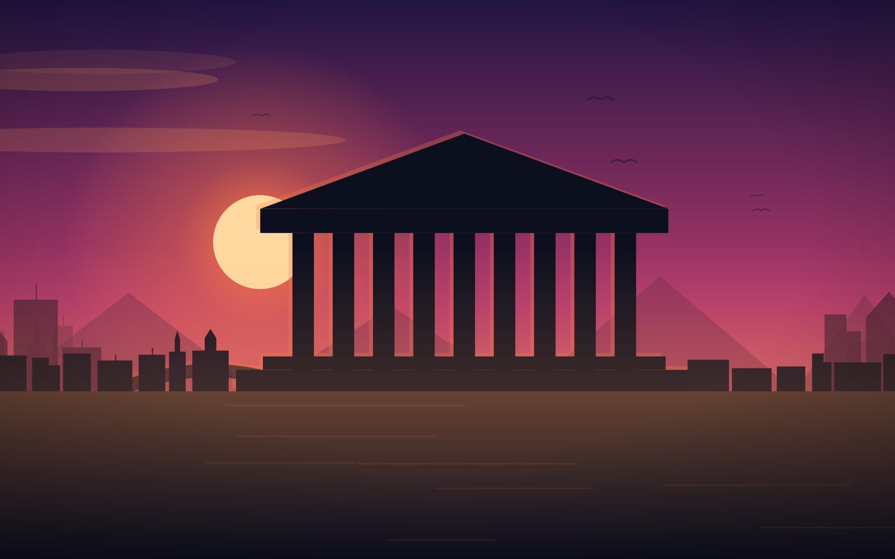
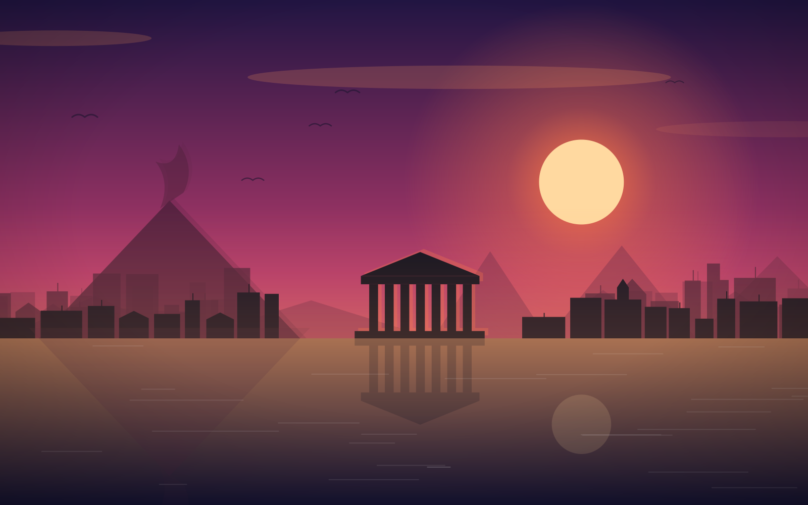
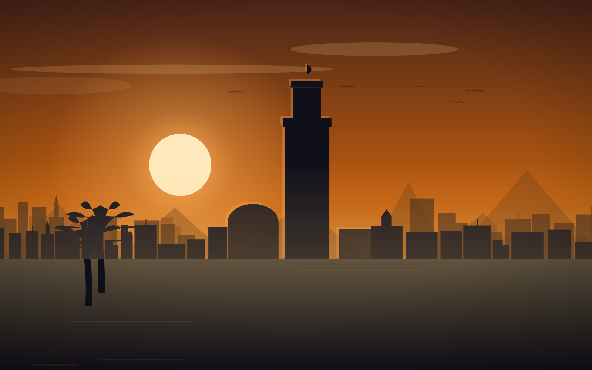
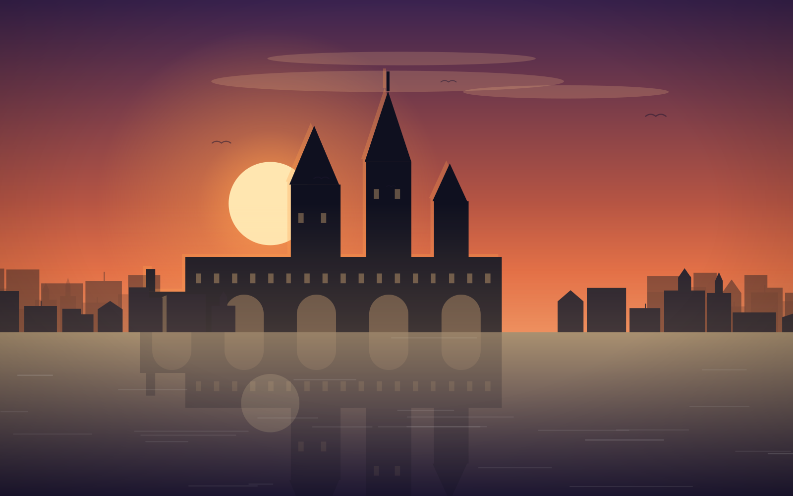

Athènes, Delphes, Météores, Mycènes
Grèce classique et Météores
Sept jours entre archéologie et monastères suspendus, vol régulier et guide parlant italien.
Un voyage pour ceux qui ont étudié tout cela à l'école et veulent enfin le voir : l'Acropole tôt le matin quand il n'y a encore personne, le sanctuaire d'Apollon à Delphes adossé à la montagne, la porte des Lionnes à Mycènes et les monastères des Météores au sommet des rochers. Guide parlant italien pendant tout le voyage et entrées déjà comprises : on ne fait pas la queue deux fois.
Jour par jour
- J. 1
Milan
Athènes : vol régulier, premier tour panoramique et installation à l'hôtel.
- J. 2
Acropole et musée : le Parthénon, le musée de l'Acropole et l'après-midi à Plaka.
- J. 3
Corinthe, Mycènes et Épidaure : le canal, la porte des Lionnes et le théâtre à l'acoustique parfaite.
- J. 4
Delphes : le sanctuaire d'Apollon, la voie sacrée et le musée. Nuit sur place.
- J. 5
Météores : deux monastères encore habités, au sommet des rochers.
- J. 6
Thermopyles et retour à Athènes : le monument de Léonidas et l'après-midi libre.
- J. 7
Retour : transfert à l'aéroport et vol vers Milan.
Le prix comprend
- Vol régulier aller-retour avec bagage
- Autocar pour tous les transferts
- 6 nuits en hôtels 4 étoiles, demi-pension et deux déjeuners
- Guide parlant italien pendant tout le voyage
- Entrées : Acropole, Delphes, Mycènes, Épidaure et deux monastères
- Accompagnateur au départ d'Italie
- Assurance médicale et bagages
Le prix ne comprend pas
- Repas non indiqués et boissons
- Pourboires
- Assurance annulation (facultative)
Autres voyages

🇮🇹 8 joursGrand Tour de la Sicile
Palerme, Erice, Agrigente, Piazza Armerina, Syracuse, Taormine et l'Etna, en autocar au départ d'Italie.

🇲🇦 8 joursMaroc — les villes impériales
Huit jours entre les quatre villes impériales, vol régulier au départ de Milan et guide parlant italien.

🇨🇿 5 joursNouvel An à Prague
Le pont Charles, le Château, Karlovy Vary et le réveillon de la Saint-Sylvestre avec les feux sur la Vltava.
Racontez-nous votre voyage
Nous répondons dans la journée ouvrée. Le devis est gratuit et n'engage personne.